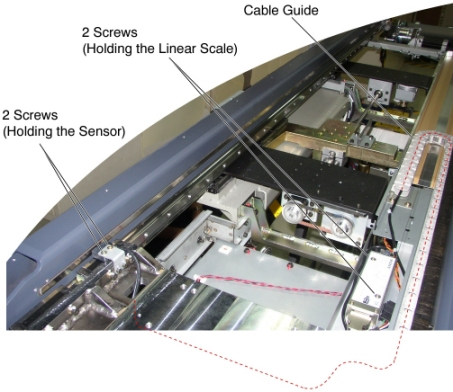
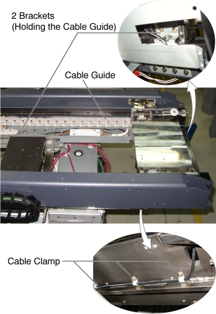

Operating Documentation
Direction 5193574-800, Rev# 22
LightSpeed 7.X Service Methods
Module Version 2.0, Version Date 2/23/12
Operating Documentation |
| Required Persons | Preliminary Reqs | Procedure | Finalization |
|---|---|---|---|
| 2 |
| Last Revised: | 23 Sep 2011 |
| Item | Qty | Effectivity | Part# | Manufacturer | |
|---|---|---|---|---|---|
| Linear Scale Assembly (for Global PET/CT Table) | 1 | - | 5127674 | - | |
| Linear Scale Assembly (for VT2000 and VT2000X) | 1 | - | 5127674 | - | |
| Linear Scale Assembly (for VT1700) | 1 | - | 5133508 | - | |
Raise the Table to maximum height.
Move the Cradle and IMS to OUT limit position.
Remove power from Table by turning off 120VAC, Axial Drive and HVDC switches on Service Switch Panel.
Remove the following Table covers and component:
Cradle
Top Cover (Right/Left)
Rear Top Cover
Rail Cover (Right/Left)
Rear Top Plate
Linear Scale Cover
Illustration 1: Table Covers

Cut any tie-wraps, and remove all cable clamps holding the linear scale cable to the Table.
Unscrew 2 screws holding the sensor to the bracket on the cradle carriage.
Unscrew 2 screws holding the linear scale to the Table frame.
Illustration 2: The Sensor and Linear Scale Removal

Remove 2 support bracket (holding the cable guide to the Table frame) by unscrewing 2 (x2) screws, and remove the linear scale assy from the Table.
Illustration 3: Cable Guide Removal

Re-install the cradle.
Power up the Table from the Service Switch Panel.
Verify that the cradle IN/OUT function is operating normally.
Turn off all 3 switches (Axial Drive, HVDC, 120VAC), and re-install the Table covers.